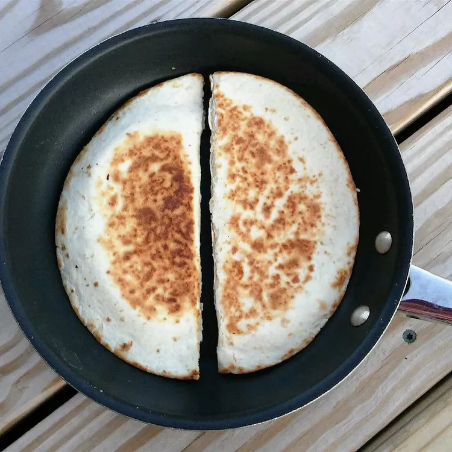

Quesadilla

A delicious, cheesy pre-dinner treat
A delicious, cheesy pre-dinner treat. I like to make quesadillas without butter, but you could put butter in the frying pan before placing the tortilla in. Serve with sour cream and salsa.
Ingredients
- 10 (6 inch) corn tortillas
- 2 cups shredded mozzarella cheese
- 1 (2 ounce) can sliced black olives
- 2 avocados - peeled, pitted and sliced
- 2 teaspoons hot pepper sauce
Steps
-
Heat a large frying pan or griddle over a medium heat. Place one tortilla flat on the frying pan.
After 1 minute flip the tortilla over. Sprinkle a little more than 1/4 cup cheese on the tortilla, followed by some olives, avocado, and hot pepper sauce.
Place another tortilla on top to make a sandwich. Cover the quesadilla with a lid. After one minute, flip the quesadilla.
When the cheese has melted on the inside, remove the quesadilla. Repeat with remaining ingredients.
- Cut the quesadillas into triangles and serve.